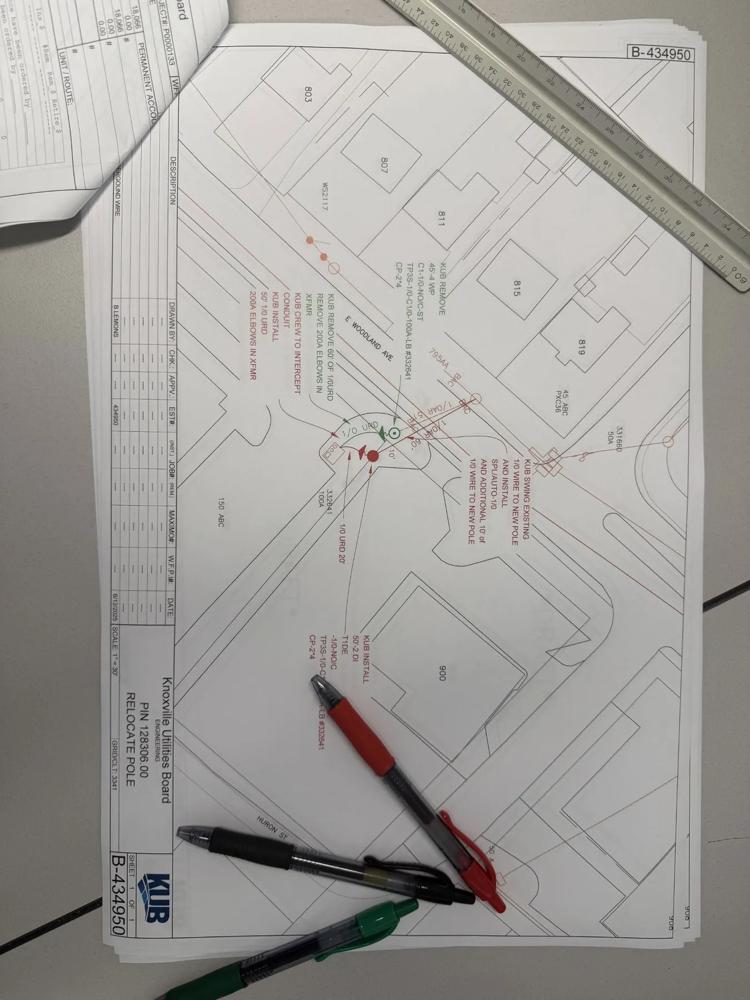

What a utility pole relocation actually involves
When the City of Knoxville planned a greenway near Fulton High School, an existing utility pole and its service line sat in the way. During my electric systems internship at Knoxville Utilities Board, I designed the pole relocation and the redesign of the adjacent service — work that was reviewed and approved by a KUB engineer.
This is a non-confidential process note. I am not sharing drawings, customer data, or internal specifications. I am sharing what the work taught me about engineering in a real utility.
The problem was not abstract
On a map, “move the pole” looks like a single decision. In practice it is a chain: clearances, structure strength, how the service attaches, what happens to neighboring spans, and whether the field can actually build what you drew. Roughly a third of my internship was field inspection — verifying complaints and confirming structure locations that GIS could not reliably provide. That time outside the office made the paper work less theoretical.


PLS-CADD as a check, not a magic answer
I used PLS-CADD to run finite element analysis on the affected poles. The software does not replace judgment. It forces you to state assumptions about loads and geometry, then shows whether those assumptions produce a structure that holds. The useful skill was learning to treat the model as a conversation with constraints, not a button that produces “the answer.”
What “approved by an engineer” actually meant
Approval was not a rubber stamp. It meant someone with a license and years of distribution experience read the work, asked questions, and signed off that it was ready to move forward. For an intern, that feedback loop is the product. You learn which details matter to constructability, which notes save a crew a phone call, and how carefully a utility treats anything that touches the public right-of-way.
Lesson I am carrying into Summer 2027
Energy and utilities work rewards people who can move between desk and field without dropping either. I want an internship where I keep practicing that — designing under real constraints, documenting clearly, and treating safety and standards as part of the engineering, not paperwork after the fact.